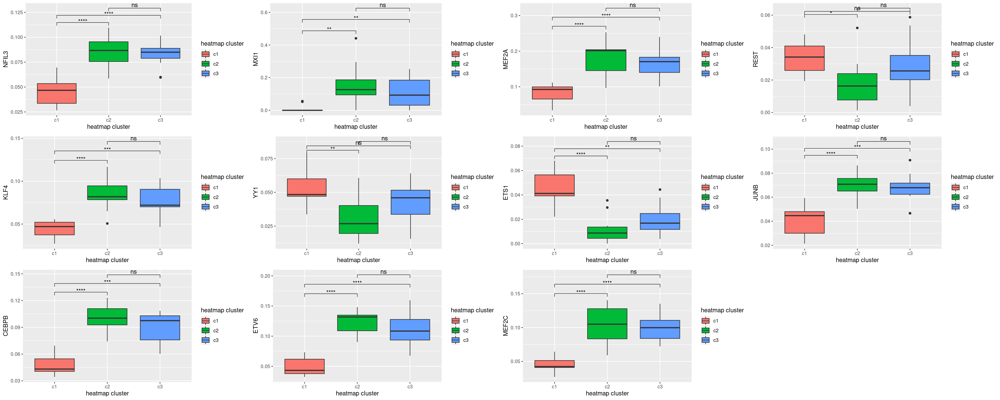
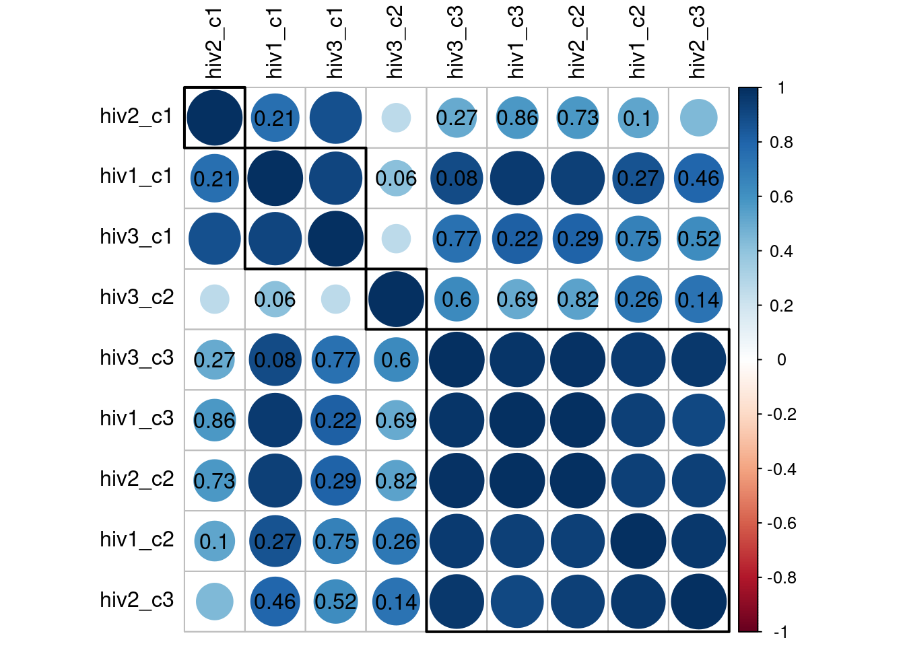
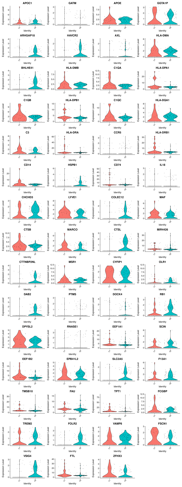

TF-activity analysis of myeloid2 cells
kmikulik
7 12 2021
Last updated: 2021-12-20
Checks: 7 0
Knit directory: report/
This reproducible R Markdown analysis was created with workflowr (version 1.6.2). The Checks tab describes the reproducibility checks that were applied when the results were created. The Past versions tab lists the development history.
Great! Since the R Markdown file has been committed to the Git repository, you know the exact version of the code that produced these results.
Great job! The global environment was empty. Objects defined in the global environment can affect the analysis in your R Markdown file in unknown ways. For reproduciblity it’s best to always run the code in an empty environment.
The command set.seed(20211203) was run prior to running the code in the R Markdown file. Setting a seed ensures that any results that rely on randomness, e.g. subsampling or permutations, are reproducible.
Great job! Recording the operating system, R version, and package versions is critical for reproducibility.
Nice! There were no cached chunks for this analysis, so you can be confident that you successfully produced the results during this run.
Great job! Using relative paths to the files within your workflowr project makes it easier to run your code on other machines.
Great! You are using Git for version control. Tracking code development and connecting the code version to the results is critical for reproducibility.
The results in this page were generated with repository version f7243f8. See the Past versions tab to see a history of the changes made to the R Markdown and HTML files.
Note that you need to be careful to ensure that all relevant files for the analysis have been committed to Git prior to generating the results (you can use wflow_publish or wflow_git_commit). workflowr only checks the R Markdown file, but you know if there are other scripts or data files that it depends on. Below is the status of the Git repository when the results were generated:
Ignored files:
Ignored: analysis/Independent_cell_type_identification_Farhadian_dataset_cache/
Ignored: analysis/Triculture_dataset_analysis_and_integration_Farhadian_dataset_cache/
Unstaged changes:
Modified: analysis/Methods.Rmd
Note that any generated files, e.g. HTML, png, CSS, etc., are not included in this status report because it is ok for generated content to have uncommitted changes.
These are the previous versions of the repository in which changes were made to the R Markdown (analysis/TF_activity_analysis_of_myeloid2_cluster.Rmd) and HTML (docs/TF_activity_analysis_of_myeloid2_cluster.html) files. If you’ve configured a remote Git repository (see ?wflow_git_remote), click on the hyperlinks in the table below to view the files as they were in that past version.
| File | Version | Author | Date | Message |
|---|---|---|---|---|
| html | 7f7db3c | Katharina782 | 2021-12-19 | Build site. |
| Rmd | bb965a8 | Katharina782 | 2021-12-19 | wflow_publish(“analysis/TF_activity_analysis_of_myeloid2_cluster.Rmd”) |
| html | eb137dd | Katharina782 | 2021-12-19 | Build site. |
| Rmd | 91e34e2 | Katharina782 | 2021-12-19 | wflow_publish(“analysis/TF_activity_analysis_of_myeloid2_cluster.Rmd”) |
| html | fce26d5 | Katharina782 | 2021-12-18 | Build site. |
| html | 2a95e92 | Katharina782 | 2021-12-18 | Build site. |
| html | fec6c6e | Katharina782 | 2021-12-17 | Build site. |
| Rmd | e5e16d2 | Katharina782 | 2021-12-17 | wflow_publish(files = rmd) |
| html | 5bb4124 | Katharina782 | 2021-12-16 | Build site. |
| Rmd | 5d4419e | Katharina782 | 2021-12-16 | wflow_publish(c("analysis/_site.yml“,”analysis/index.Rmd“,”analysis/references.bib", |
| html | 183077b | Katharina782 | 2021-12-16 | Build site. |
| Rmd | 5509977 | Katharina782 | 2021-12-16 | wflow_publish(“analysis/TF_activity_analysis_of_myeloid2_cluster.Rmd”) |
| Rmd | dde1097 | Katharina782 | 2021-12-10 | recent updates |
| html | dde1097 | Katharina782 | 2021-12-10 | recent updates |
knitr::opts_chunk$set(echo = TRUE, collapse = TRUE, message = FALSE,
cache = TRUE, autodep = TRUE)
set.seed(42)library(tidyverse)
library(Seurat)
library(edgeR)
library(Matrix)
library(data.table)
library(ggplot2)
library(dplyr)
library(ggrepel)
#library(harmony)
library(RColorBrewer)
library(pheatmap)
library(ggcorrplot)
library(ComplexHeatmap)
library(circlize)
library(ggpubr)
library(gridExtra)
library(knitr)
library(ggVennDiagram)
library(corrplot)
# "Multitasking/Multiprocessing"
library(future)
#plan("multisession", workers = 24)GRN inference with Scenic
Using Scenic I tried to infer Gene regulatory networks from the gene expression data. The output is a matrix of TF (Transcription Factor) activity per cell. In this case the activity matrix contains activity of 125 different transcription factors.
First, we wanted to see if we can identify patterns in the TF activity in the Myeloid2 cells. We compared the TF activity to TFs shown to have differential binding scores between three infection states (uninfected, latent infection, active infection) in primary microglia (bulk ATACseq). For the comparison with the TF activity in Myeloid2 cells we focused on the TF with differential binding scores between uninfected and latently infected states.
Can we see patterns of increased/decreased TF activity in the Myeloid2 cells that might correspond to the binding scores between infection states in primary microglia?
- read in Seurat object
hiv7 <- readRDS("/media/ag-cherrmann/kmikulik/HIV_microglia/src/Reproduce_Farhadian_Paper/Seurat_objects/total_7_samples_label_transfer.rds")
hiv4 <- readRDS("/media/ag-cherrmann/kmikulik/HIV_microglia/src/Reproduce_Farhadian_Paper/Seurat_objects/non_integrated_HIV1_HIV2_4samples_seurat_object.rds")- read in AuCell matrix (output from Scenic)
auc_mtx <- read.table("/media/ag-cherrmann/kmikulik/HIV_microglia/data/aucell_matrix_10k_hvg.tsv", sep = "\t")- Combine AuCell Matrix and Seurat object
# add auc matrix to metadata of hiv4 seurat object
hiv7_scenic <- AddMetaData(hiv7,
metadata = auc_mtx,
col.name = colnames(auc_mtx))Bulk ATACseq footprinting results
Using bulk ATACseq data from primary microglia at three different conditions, active infection, latent infection, uninfected, differential binding scores were obtained using TOBIAS. Here, I will use the TFs which were previously shown to have differential binding scores in these primary microglia. Since I expect the CSF Myeloid cells to be latently infected, because they have been obtained from patients receiving ART, I will use the TFs with differential binding scores between latent infection and uninfected. We would like to know if the TF activity inferred from RNAseq data of Myeloid2 cells correlates with these differential binding scores. In other words, we want to know if the patterns of differential TF activity are similar as the patterns of differential TF binding scores. For example, if a TF was shown to be more bound in latently infected primary microglia compared to uninfected primary microglia, we would expect the TF to be more active in a group of Myeloid2 cells which are latently infected compared to a group of Myeloid2 cells which are uninfected.
When you overlap the TF from the TF activity matrix obtained by running SCNEIC on the 10.000 most highly variable genes with the differntially bound TFs, 24 of the TFs overlap.
Using less than 10.000 most highly variable genes as an input matrix for SCENIC results in a lower number of TFs which overlap. Increasing the number of input features for SCENIC increases the number of TFs included in the TF activity matrix
# read in dataframe containing differntial binding scores between conditions
#
# red = latently infected
# gfp = active infected
# uninfected
tfs_ana <- read.table("/media/ag-cherrmann/projects/06_HIV_Microglia/data/atacseq/data-2020-11-06/tobias/TOBIAS_snakemake/footprint_mglia2_GlassTF_17-03/TFBS/bindetect_results.txt", sep = "\t", header = TRUE)
# filter TFs with significant p values between latent infection and uninfected
# I decided to use a threshold of p-value < 1e-50, because due to the large number
# of data, all p-values will be very high
top_tfs <- tfs_ana %>% filter(uninf_red_pvalue < 1e-50)
# keep only the TFs in the dataframe which overlap between the two datasets.
overlap_atac <- top_tfs %>% filter(name %in% colnames(auc_mtx))
# extract names of TFs more bound in either condition
up_latent <- overlap_atac$name[overlap_atac$uninf_red_change < 0]
up_uninf <- overlap_atac$name[overlap_atac$uninf_red_change > 0]Volcano Plot ATAC-seq data
Interestingly, only four TFs found in the TF activity matrix of Myeloid2 cells are more bound in latent infection than in uninfected primary microglia.
top_tfs %>%
# add a column containing information in which condition the corresponding TF
# is upregulated
mutate(condition = ifelse(uninf_red_change < 0, "up_latent", "up_uninf")) %>%
# add a column conaining the labels for the plot
# I only want to label cells which are also found by Scenic
mutate(label = ifelse(name %in% overlap_atac$name, name, NA)) %>%
ggplot(aes(x = uninf_red_change,
y = -log10(uninf_red_pvalue),
col = condition,
label = label)) +
geom_point() +
geom_hline(yintercept = -log10(1e-50), col = "red") +
geom_text(nudge_x = .05, nudge_y = 2) +
labs(title = "TFs with differential binding scores between latent infection and uninfected primary microglia") +
ylab("-log10(p_value)") +
xlab("differential binding score")
Warning: Removed 51 rows containing missing values (geom_text).
Compare TF activities between clusters and look for patterns
The idea was to cluster the Myeloid2 cells based on their TF activity using Hierarchical clustering. To do this I perofrmed hierarchical clustering on Myeloid2 cells from patient1 (HIV1_CSF) with k=3/4/5. The idea for using only patient 1 was that the other two patients might be used for validation of the clustering later on. If the clusters are biological, I might be able to transfer the clusters onto the Myeloid2 cells from patient2 (HIV2_CSF) and patient3 (HIV3_CSF). If the clusters also separate the Myeloid2 cells of the other two patients nicely, this would validate that there is a biological meaning behind the clusters.
However, as we will see the label transfer of the cluster identities did not work, probably due to the small sample size. There are only 146 in total in the Myeloid2 cluster of infected patients.
The alternative strategy was to perform independent hierarchical clustering across all patients and compare the TF activity between clusters. Can we find TF activities which differentiate clusters across patients and find correlations between clusters across patients?
- Determine k for k-means hierarchical clustering
- Transfer the cluster identities to patient2 and patient3
- Hierarchical Clustering for all 3 patients separately
# TF annotations
la <- rowAnnotation(type_TF =
case_when(colnames(auc_mtx) %in% up_latent ~ "up_latent",
colnames(auc_mtx) %in% up_uninf ~ "up_uninf",
TRUE ~"unknown"),
name = "type_TF",
col = list(type_TF = c("up_latent" = "red",
"up_uninf" = "pink",
"unknown" = "forestgreen")))
Split Heatmap into 3 separate heatmaps according to the different patients
# 3 heatmaps with all Scenic TFs
ht_list <- map(seq.int(1:3), function(n) {
patients <- c ("HIV1_CSF", "HIV2_CSF", "HIV3_CSF") # 3 different patients
# filter the dataset for only Myeloid2 cells and iteratively one of the patients
df <- hiv7@meta.data %>% filter(cell_type == "Myeloid2",
orig.ident == patients[n])
# select only the cells of the activity matrix which are myeloid2 and the correct patient
mtx <- auc_mtx[rownames(auc_mtx) %in% rownames(df),]
# heatmap
ht <- Heatmap(t(mtx),
column_title = paste0("patient: ", patients[n]),
column_km = 3,
#row_km = n,
show_column_names = FALSE,
col =colorRampPalette(rev(brewer.pal(n = 7, name = "RdYlBu")))(100),
show_row_names = TRUE
)
#top_annotation = column_annotation)
list(name = patients[n], heatmap = ht)
})
ht_list[[1]]$heatmap + ht_list[[2]]$heatmap + ht_list[[3]]$heatmap + la
Heatmap containing only TFs found by ATAC-seq data analysis
# 3 heatmaps, but only the TFs which overlap with Anas analysis
ht_list <- map(seq.int(1:3), function(n) {
patients <- c ("HIV1_CSF", "HIV2_CSF", "HIV3_CSF") # 3 different patients
# filter the dataset for only Myeloid2 cells and iteratively one of the patients
df <- hiv7@meta.data %>% filter(cell_type == "Myeloid2",
orig.ident == patients[n])
# select only the cells of the activity matrix which are myeloid2 and the correct patient
# select TFs which overlap with Anas analysis
mtx <- auc_mtx[rownames(auc_mtx) %in% rownames(df), overlap_atac$name]
# heatmap
ht <- Heatmap(t(mtx),
column_title = paste0("patient: ", patients[n]),
column_km = 3,
#row_km = n,
show_column_names = FALSE,
col =colorRampPalette(rev(brewer.pal(n = 7, name = "RdYlBu")))(100),
right_annotation = rowAnnotation(type_TF = ifelse(colnames(auc_mtx[,overlap_atac$name]) %in% up_latent, "up_latent", "up_uninf"),
name = "type_TF",
col = list(type_TF = c("up_latent" = "red",
"up_uninf" = "pink"))))
list(name = patients[n], heatmap = ht)
})
ht_list = ht_list[[1]]$heatmap + ht_list[[2]]$heatmap + ht_list[[3]]$heatmap
draw(ht_list, ht_gap = unit(1, "cm"))
1. Determine k for k-means hierarchical clustering
The plot of within-cluster som of squares shows that the sweet spot for the value of k is somewhere between 3 and 5. To determine the best k for k-means clustering k = 3, k = 4 and k = 5 were tried and the different outcomes compared. Since k = 4 and k = 5 does not yield an increased number of TFs which differntiate the different clusters, and therefore do not add any insights we proceeded with k = 3 in the following analysis.
The results of each k can be seen below. Click on the tabs to see heatmaps of the hierarchical clustering, as well as statistical test on different TF acitivity between clusters.
df <- hiv7@meta.data %>% filter(cell_type == "Myeloid2",
orig.ident == "HIV1_CSF")
mtx <- auc_mtx[rownames(auc_mtx) %in% rownames(df), ]
# Decide on a k for clustering
wss = sapply(2:15, function(k) {
kmeans(x = t(mtx), centers = k)$tot.withinss
})
plot(2:15, wss, type = "b",
xlab = "Number of clusters k",
ylab = "Total within-clusters sum of square")
K = 3 Hierarchical Clustering
Heatmap for patient 1
#map(seq.int(1:5), function(k){
df <- hiv7@meta.data %>% filter(cell_type == "Myeloid2",
orig.ident == "HIV1_CSF")
# select only the cells of the activity matrix which are myeloid2 and the correct patient
mtx <- auc_mtx[rownames(auc_mtx) %in% rownames(df), ]
# heatmap
set.seed(123)
ht_pat1 <-draw(Heatmap(t(mtx),
column_title = "Myeloid2 cells from patient 1, k = 3",
column_km = 3,
column_km_repeats = 100,
show_column_names = FALSE,
col =colorRampPalette(rev(brewer.pal(n = 7, name = "RdYlBu")))(100),
right_annotation = la
))
#top_annotation = column_annotation) Extract cells from each cluster
# if you draw the heatmap, the results of th eclustering will not change anymore
#png("/media/ag-cherrmann/kmikulik/HIV_microglia/analysis/Myeloid2_cluster/Myeloid2_3clusters.png", width = 15, height = 17, res = 1200)
#ht <- draw(ht_pat1)
# get the columns names of cluster one
c1 <- colnames(t(mtx[column_order(ht_pat1)[[1]],]))
#write.table(c1, "/media/ag-cherrmann/kmikulik/HIV_microglia/data/hiv1_cluster1.tsv", sep = "\t")
# get the column names of cluster two
c2 <- colnames(t(mtx[column_order(ht_pat1)[[2]],]))
#write.table(c2, "/media/ag-cherrmann/kmikulik/HIV_microglia/data/hiv1_cluster2.tsv", sep = "\t")
# get the column names of cluster 3
c3 <- colnames(t(mtx[column_order(ht_pat1)[[3]],]))
#write.table(c3, "/media/ag-cherrmann/kmikulik/HIV_microglia/data/hiv1_cluster3.tsv", sep = "\t")number of cells in each cluster
# summary staticstics
hiv7_scenic@meta.data %>%
rownames_to_column("cell") %>%
filter(orig.ident == "HIV1_CSF",
cell_type == "Myeloid2",
cell %in% c(c1,c2,c3)) %>%
mutate(ht_cluster = ifelse(cell %in% c1, "c1", ifelse(cell %in% c2, "c2", "c3"))) %>%
#group_by(ht_cluster) %>%
select(ht_cluster, CTCF) %>%
group_by(ht_cluster) %>%
summarise(
count = n(),
mean = mean(CTCF),
sd = sd(CTCF)) %>% kable()| ht_cluster | count | mean | sd |
|---|---|---|---|
| c1 | 15 | 0.0417362 | 0.0163909 |
| c2 | 23 | 0.0156238 | 0.0128713 |
| c3 | 34 | 0.0156253 | 0.0139310 |
TF activity per cluster
Plot TF activity for all TFs which showed differential binding scores in primary microglia. For some TFs it appears that there are differences in activity between the clusters. The next step will be to quantitate these differences.
From the violin plots below it becomes evident, that the acitivity is not normally distributed. Therefore, we will use Kruskal-Wallis test (non-parametric) instead of ANOVA (parametric).
# make boxplots and violin plots for all TFs
p <- list()
for (n in 1:24){
tf <- overlap_atac$name[n]
p[[n]] <- hiv7_scenic@meta.data %>%
rownames_to_column("cell") %>%
filter(orig.ident == "HIV1_CSF",
cell_type == "Myeloid2",
cell %in% c(c1,c2,c3)) %>%
mutate(ht_cluster = ifelse(cell %in% c1, "c1", ifelse(cell %in% c2, "c2", "c3"))) %>%
#group_by(ht_cluster) %>%
select(ht_cluster, tf) %>%
ggplot(aes_string(x = "ht_cluster", y = tf)) +
geom_boxplot(aes(fill = ht_cluster)) +
geom_violin(aes(alpha = 0.1)) +
stat_compare_means()
}
do.call(grid.arrange,c(p, ncol = 4, top= "Transcription factor activity per cluster"))
Are there significant differences in TF activity between the three clusters?
ANOVA test is parametric and assumes normally distributed data, while Kruskal-Wallis-Test compares the mean of one or more groups, but is non-parametric. As can be seen in the boxplots above the data is not normally distributed, therefore Kruskal-Wallis-Test is more appropriate in this case. In both cases the Null-Hypothesis is that there is no difference between the groups.
Since I am repeating the test 125 times, I adjust the p-values with the FDR method. This methods is more powerful than more conservative methdos, like bonferroni, Holm or Hochberg.
Performing Kruskal-Wallis-Test to find differences between the three clusters in patient1 yields 54 TFs of all 125 TFs which are differentially active between the three clusters (p-value < 0.05). Of the 24 TFs with differential binding scores in the C20 cell line, sixteen have significantly different activity between the clusters.
Now that we know that there are significant differences between clusters, we want to identify which cluster/s are different from which other cluster/s.
Pairwise-Wilcox-Test is a non-parametric pairwise test. Again, because we repeat the test we will correct for multiple hypothesis testing using the FDR method. The results are shown in boxplots below.
Kruskal-Wallis-Test, p-value adjustment, posthoc tests
Kruskal-Wallis Test and p-value adjustments for all 125 TFs
# non-parametric alternative to ANOVA -> Kruskal_wallis test
k3_df <- hiv7_scenic@meta.data %>%
rownames_to_column("cell") %>%
filter(orig.ident == "HIV1_CSF",
cell_type == "Myeloid2",
cell %in% c(c1,c2,c3)) %>%
mutate(ht_cluster = ifelse(cell %in% c1, "c1", ifelse(cell %in% c2, "c2", "c3")))
# check all TFs
p_values <- map(seq.int(1:125), function(n){
tf <- colnames(auc_mtx)[n]
p_values <- unlist(kruskal.test(pull(k3_df[tf]) ~ ht_cluster, k3_df))["p.value"]
#list(tf = tf, p_value = p_values)
})
# plot distribution of p_values
hist(as.numeric(unname(unlist(p_values))),
main = "distribution of p_values",
xlab = "p_values",
breaks = 20)
# adjust for multiple testing with FDR
adj_p_values <- p.adjust(as.numeric(unname(unlist(p_values))), method = "fdr")
hist((adj_p_values),
main = "distribution of p_values",
xlab = "p_values",
breaks = 20)
# how many transcription factors are significantly different between the clusters?
sign3 <- adj_p_values[adj_p_values<.05]
length(adj_p_values[adj_p_values<0.05])
[1] 64
# get TFs that are significantly different
hiv1_diff <- colnames(auc_mtx)[adj_p_values < .05]
#write.table(diff3, "/media/ag-cherrmann/kmikulik/HIV_microglia/data/total_TFs_differentially_active_in_HIV1")- Kruskal-Wallis test and p-value adjustment for 24 TFs also identified by ATAC-seq
# check 24 TFs with Kruskal Wallis test
p_values <- map(seq.int(1:24), function(n){
tf <- overlap_atac$name[n]
p_values <- unlist(kruskal.test(pull(k3_df[tf]) ~ ht_cluster, k3_df))["p.value"]
})
#sign_p_values <- p_values[p_values < 0.01]
# adjust for multiple hypothesis testing
adj_p_values <- p.adjust(as.numeric(unname(unlist(p_values))), method = "fdr")
# how many transcription factors are significantly different between the clusters?
length(adj_p_values[adj_p_values<0.05])
[1] 16
# get TFs that are differentially expressed
hiv1_atac <- overlap_atac$name[adj_p_values < .05]
#write.table(diff3_atac, "/media/ag-cherrmann/kmikulik/HIV_microglia/data/atac_TFs_differentially_active_in_HIV1")- Posthoc tests for k = 3
For the 16 TFs with significantly different activity between the 3 clusters:
# We perform a posthoc test
#wilcox_list = list()
wilcox_list <- map(seq.int(1:length(hiv1_atac)), function(i){
tf <- hiv1_atac[i]
#print(tf)
wilcox <- pairwise.wilcox.test(pull(k3_df[tf]), pull(k3_df["ht_cluster"]),
p.adjust.method = "fdr")
list(TF = tf, wilcox = wilcox)
})
#length(wilcox_list)
#wilcox_listK = 4 Hierarchical clustering
Heatmap for patient 1
#map(seq.int(1:5), function(k){
df <- hiv7@meta.data %>% filter(cell_type == "Myeloid2",
orig.ident == "HIV1_CSF")
# select only the cells of the activity matrix which are myeloid2 and the correct patient
mtx <- auc_mtx[rownames(auc_mtx) %in% rownames(df), ]
# heatmap
set.seed(123)
ht <- draw(Heatmap(t(mtx),
column_title = "Myeloid2 cells from patient 2, k = 4",
column_km = 4,
column_km_repeats = 100,
show_column_names = FALSE,
col =colorRampPalette(rev(brewer.pal(n = 7, name = "RdYlBu")))(100),
right_annotation = la
))
#top_annotation = column_annotation)
Extract cells from each cluster of k = 4
# get the columns names of cluster one
cl1 <- colnames(t(mtx[column_order(ht)[[1]],]))
# get the column names of cluster two
cl2 <- colnames(t(mtx[column_order(ht)[[2]],]))
# get the column names of cluster 3
cl3 <- colnames(t(mtx[column_order(ht)[[3]],]))
cl4 <- colnames(t(mtx[column_order(ht)[[4]],]))Are there significant differences in TF activity between the four clusters?
ANOVA test is parametric and assumes normally distributed data, while Kruskal-Wallis-Test compares the mean of one or more groups, but is non-parametric. As can be seen in the boxplots above the data is not normally distributed, therefore Kruskal-Wallis-Test is more appropriate in this case. In both cases the Null-Hypothesis is that there is no difference between the groups.
Since I am repeating the test 125 times, I adjust the p-values with the FDR method. This methods is more powerful than more conservative methdos, like bonferroni, Holm or Hochberg.
Performing Kruskal-Wallis-Test to find differences between the four clusters in patient1 yields 51 TFs of all 125 TFs which are differentially active between the three clusters (p-value < 0.05). Of the 24 TFs with differential binding scores in the C20 cell line, fourteen have significantly different activity between the clusters.
Now that we know that there are significant differences between clusters, we want to identify which cluster/s are different from which other cluster/s.
Pairwise-Wilcox-Test is a non-parametric pairwise test. Again, because we repeat the test we will correct for multiple hypothesis testing using the FDR method. The results are shown in boxplots below.
Kruskal-Wallis-Test, p-value adjustment, posthoc tests
- Kruskal-Wallis Test and p-value adjustments for all 125 TFs
k4_df <- hiv7_scenic@meta.data %>%
rownames_to_column("cell") %>%
filter(orig.ident == "HIV1_CSF",
cell_type == "Myeloid2",
cell %in% c(cl1,cl2,cl3,cl4)) %>%
mutate(ht_cluster = ifelse(cell %in% cl1, "cl1",
ifelse(cell %in% cl2, "cl2",
ifelse(cell %in% cl3, "cl3", "cl4"))))
# check all TFs
p_values <- map(seq.int(1:125), function(n){
tf <- colnames(auc_mtx)[n]
p_values <- unlist(kruskal.test(pull(k4_df[tf]) ~ ht_cluster, k4_df))["p.value"]
#list(tf = tf, p_value = p_values)
})
# adjust for multiple testing with FDR
adj_p_values <- p.adjust(as.numeric(unname(unlist(p_values))), method = "fdr")
# how many transcription factors are significantly different between the clusters?
sign <- adj_p_values[adj_p_values < 0.05]
length(adj_p_values[adj_p_values<0.05])
[1] 55
# get the TFs that are differentially expressed
diff4 <- colnames(auc_mtx)[adj_p_values < 0.05]
#write.table(diff4, "/media/ag-cherrmann/kmikulik/HIV_microglia/data/total_TFs_differentially_active_in_HIV1_k=4")- Kruskal-Wallis Test and p-value adjustments for 14 TFs with differential binding scores
# check 24 TFs with Kruskal Wallis test
p_values <- map(seq.int(1:24), function(n){
tf <- overlap_atac$name[n]
p_values <- unlist(kruskal.test(pull(k4_df[tf]) ~ ht_cluster, k4_df))["p.value"]
})
#sign_p_values <- p_values[p_values < 0.01]
# adjust for multiple hypothesis testing
adj_p_values <- p.adjust(as.numeric(unname(unlist(p_values))), method = "fdr")
# how many transcription factors are significantly different between the clusters?
length(adj_p_values[adj_p_values<0.05])
[1] 15
# get the TFs that are differentially expressed
diff4_atac <- overlap_atac$name[adj_p_values < .05]
#write.table(diff4_atac, "/media/ag-cherrmann/kmikulik/HIV_microglia/data/atac_TFs_differentially_active_in_HIV1_k=4")- Pairwise-Wilcox_Test for k = 4
For the 16 TFs with significantly different activity between the four clusters:
# We perform a posthoc test
#wilcox_list = list()
wilcox_list <- map(seq.int(1:length(diff4_atac)), function(i){
tf <- diff4_atac[i]
print(tf)
wilcox <- pairwise.wilcox.test(pull(k4_df[tf]), pull(k4_df["ht_cluster"]),
p.adjust.method = "fdr")
list(TF = tf, wilcox = wilcox)
})
[1] "NFIL3"
[1] "MXI1"
[1] "CREB1"
[1] "NFATC2"
[1] "MEF2A"
[1] "REST"
[1] "LEF1"
[1] "YY1"
[1] "MYB"
[1] "ETS1"
[1] "JUNB"
[1] "CEBPB"
[1] "CTCF"
[1] "ETV6"
[1] "MEF2C"
#length(wilcox_list)
#wilcox_listK = 5 Hierarchical Clustering
Heatmap for patient 1
#map(seq.int(1:5), function(k){
df <- hiv7@meta.data %>% filter(cell_type == "Myeloid2",
orig.ident == "HIV1_CSF")
# select only the cells of the activity matrix which are myeloid2 and the correct patient
mtx <- auc_mtx[rownames(auc_mtx) %in% rownames(df), ]
# heatmap
set.seed(123)
ht <- draw(Heatmap(t(mtx),
column_title = "Myeloid2 cells from patient 1, k = 5",
column_km = 5,
column_km_repeats = 100,
show_column_names = FALSE,
col =colorRampPalette(rev(brewer.pal(n = 7, name = "RdYlBu")))(100),
right_annotation = la
)) 
Extract cells from each cluster for k= 5
# get the columns names of cluster one
clu1 <- colnames(t(mtx[column_order(ht)[[1]],]))
# get the column names of cluster two
clu2 <- colnames(t(mtx[column_order(ht)[[2]],]))
# get the column names of cluster 3
clu3 <- colnames(t(mtx[column_order(ht)[[3]],]))
clu4 <- colnames(t(mtx[column_order(ht)[[4]],]))
clu5 <- colnames(t(mtx[column_order(ht)[[5]], ]))Are there significant differences in TF activity between the four clusters?
ANOVA test is parametric and assumes normally distributed data, while Kruskal-Wallis-Test compares the mean of one or more groups, but is non-parametric. As can be seen in the boxplots above the data is not normally distributed, therefore Kruskal-Wallis-Test is more appropriate in this case. In both cases the Null-Hypothesis is that there is no difference between the groups.
Since I am repeating the test 125 times, I adjust the p-values with the FDR method. This methods is more powerful than more conservative methdos, like bonferroni, Holm or Hochberg.
Performing Kruskal-Wallis-Test to find differences between the five clusters in patient1 yields 59 TFs of all 125 TFs which are differentially active between the three clusters (p-value < 0.05). Of the 24 TFs with differential binding scores in the C20 cell line, fifteen have significantly different activity between the clusters.
Now that we know that there are significant differences between clusters, we want to identify which cluster/s are different from which other cluster/s.
Pairwise-Wilcox-Test is a non-parametric pairwise test. Again, because we repeat the test we will correct for multiple hypothesis testing using the FDR method. The results are shown in boxplots below.
Kruskal-Wallis-Test, p-value adjustment, posthoc tests
- Kruskal-Wallis Test and p-value adjustments for all 125 TFs
# all TFs
k5_df <- hiv7_scenic@meta.data %>%
rownames_to_column("cell") %>%
filter(orig.ident == "HIV1_CSF",
cell_type == "Myeloid2",
cell %in% c(clu1,clu2,clu3,clu4, clu5)) %>%
mutate(ht_cluster = ifelse(cell %in% clu1, "clu1",
ifelse(cell %in% clu2, "clu2",
ifelse(cell %in% clu3, "clu3",
ifelse(cell %in% clu4, "clu4", "clu5")))))
n = 1
# check all TFs
p_values <- map(seq.int(1:125), function(n){
tf <- colnames(auc_mtx)[n]
p_values <- unlist(kruskal.test(pull(k5_df[tf]) ~ ht_cluster, k5_df))["p.value"]
#list(tf = tf, p_value = p_values)
})
# adjust for multiple testing with FDR
adj_p_values <- p.adjust(as.numeric(unname(unlist(p_values))), method = "fdr")
# how many transcription factors are significantly different between the clusters?
sign <- adj_p_values[adj_p_values < 0.05]
length(adj_p_values[adj_p_values<0.05])
[1] 59
# get the TFs that are differentially expressed
diff5 <- colnames(auc_mtx)[adj_p_values < 0.05]
#write.table(diff5, "/media/ag-cherrmann/kmikulik/HIV_microglia/data/total_TFs_differentially_active_in_HIV1_k=5")- Kruskal-Wallis Test and p-value adjustments for all 125 TFs
# check 24 TFs with Kruskal Wallis test
p_values <- map(seq.int(1:24), function(n){
tf <- overlap_atac$name[n]
p_values <- unlist(kruskal.test(pull(k5_df[tf]) ~ ht_cluster, k5_df))["p.value"]
})
#sign_p_values <- p_values[p_values < 0.01]
# adjust for multiple hypothesis testing
adj_p_values <- p.adjust(as.numeric(unname(unlist(p_values))), method = "fdr")
# how many transcription factors are significantly different between the clusters?
length(adj_p_values[adj_p_values<0.05])
[1] 15
# get the TFs that are differentially expressed
diff5_atac <- overlap_atac$name[adj_p_values < .05]
#write.table(diff5_atac, "/media/ag-cherrmann/kmikulik/HIV_microglia/data/atac_TFs_differentially_active_in_HIV1_k=5")- Pairwise-Wilcox_Test for k = 5
For the 15 TFs with significantly different activity between the four clusters:
# We perform a posthoc test
#wilcox_list = list()
wilcox_list <- map(seq.int(1:length(diff5_atac)), function(i){
tf <- diff5_atac[i]
print(tf)
wilcox <- pairwise.wilcox.test(pull(k5_df[tf]), pull(k5_df["ht_cluster"]),
p.adjust.method = "fdr")
list(TF = tf, wilcox = wilcox)
})
[1] "NFIL3"
[1] "MXI1"
[1] "CREB1"
[1] "NFATC2"
[1] "MEF2A"
[1] "REST"
[1] "LEF1"
[1] "KLF4"
[1] "YY1"
[1] "ETS1"
[1] "JUNB"
[1] "CEBPB"
[1] "CTCF"
[1] "ETV6"
[1] "MEF2C"
#length(wilcox_list)
#wilcox_listWhich Clusters are sifnificantly different for different k?
The results from the statistical tests on difference in TF activity between clusters can be seen in the boxplots below. Sixteen, fourteen and twelve TFs were found to be differentially active between the clusters for k equal three, four and five respectively.
k = 3?
library(rstatix)
library(ggpubr)
test <- k3_df
#tf.oi <- c("CTCF", "REST", "YY1")
#names(tf.oi) <- tf.oi
test.list <- map(hiv1_atac, function(tf) {
ggplot() +
geom_boxplot(aes(x = test %>% pull("ht_cluster"), y = test %>% pull(tf),
fill = test %>% pull("ht_cluster"))) +
stat_pvalue_manual(test %>%
pairwise_wilcox_test(as.formula(paste0(tf, " ~ ht_cluster"))) %>%
add_xy_position()) +
xlab("heatmap cluster") +
ylab(paste0(tf)) +
guides(fill = guide_legend(title = "heatmap cluster"))
})
do.call(gridExtra::grid.arrange, c(test.list, ncol=5, nrow = 4))
k = 4
library(rstatix)
library(ggpubr)
test <- k4_df
test.list <- map(diff4_atac, function(tf) {
ggplot() +
geom_boxplot(aes(x = test %>% pull("ht_cluster"), y = test %>% pull(tf),
fill = test %>% pull("ht_cluster"))) +
stat_pvalue_manual(test %>%
pairwise_wilcox_test(as.formula(paste0(tf, " ~ ht_cluster"))) %>%
add_xy_position()) +
xlab("heatmap cluster") +
ylab(paste0(tf)) +
guides(fill = guide_legend(title = "heatmap cluster"))
})
do.call(gridExtra::grid.arrange, c(test.list, ncol=5, nrow = 3))
k = 5
library(rstatix)
library(ggpubr)
test <- k5_df
test.list <- map(diff5_atac, function(tf) {
ggplot() +
geom_boxplot(aes(x = test %>% pull("ht_cluster"), y = test %>% pull(tf),
fill = test %>% pull("ht_cluster"))) +
stat_pvalue_manual(test %>%
pairwise_wilcox_test(as.formula(paste0(tf, " ~ ht_cluster"))) %>%
add_xy_position()) +
xlab("heatmap cluster") +
ylab(paste0(tf)) +
guides(fill = guide_legend(title = "heatmap cluster"))
})
do.call(gridExtra::grid.arrange, c(test.list, ncol=5, nrow = 3))
{-}
Conclusion on how many k’s to use for hierarchical clustering
As mentioned, k = 3 was used for the subsequent analysis, since more clusters did not add additional insights.
The Venn diagram below shows very nicely, that out of all TFs with different activity between clusters, 68% overlap for all k (k=3/4/5) that I tested (right plot). 75% of the TF with differential binding scores in the C20 cell line overlapped for all k (left plot).
Therefore, I decided to proceed with k = 3 for the following analysis.
diff5_atac <- as.vector(read.table( "/media/ag-cherrmann/kmikulik/HIV_microglia/data/atac_TFs_differentially_active_in_HIV1_k=5"))[["x"]]
diff5 <- as.vector(read.table( "/media/ag-cherrmann/kmikulik/HIV_microglia/data/total_TFs_differentially_active_in_HIV1_k=5"))[["x"]]
diff4_atac <- as.vector(read.table("/media/ag-cherrmann/kmikulik/HIV_microglia/data/atac_TFs_differentially_active_in_HIV1_k=4"))[["x"]]
diff4 <- as.vector(read.table("/media/ag-cherrmann/kmikulik/HIV_microglia/data/total_TFs_differentially_active_in_HIV1_k=4"))[["x"]]
# list of TFs from ATAC-seq differntially active between the 3 heatmap
#clusters from patient 1
diff3_atac <- as.vector(read.table("/media/ag-cherrmann/kmikulik/HIV_microglia/data/atac_TFs_differentially_active_in_HIV1"))[["x"]]
# list of TFs differntially active between the 3 heatmap clusters from patient 1
diff3 <- as.vector(read.table("/media/ag-cherrmann/kmikulik/HIV_microglia/data/total_TFs_differentially_active_in_HIV1"))[["x"]]p1 <- ggVennDiagram(list(diff3_atac, diff4_atac, diff5_atac),
label_alpha = 0,
category.names= c("k = 3", "k = 4", "k = 5"),
#set.size = 20,
label = "percent",
label_size = 6) +
scale_fill_distiller(palette = "RdBu") +
labs(title = "TFs with differential binding scores in C20 cell line")
#scale_fill_gradient (low = "lightblue", high = "darkblue")
p2 <- ggVennDiagram(list(diff3, diff4, diff5),
label_alpha = 0,
category.names= c("k = 3", "k = 4", "k = 5"),
label = "percent",
label_size = 6) +
scale_fill_distiller(palette = "RdBu") +
labs(title = "all TFs with different activity")
fig <- ggarrange(p1, p2, ncol = 2, nrow = 1)
annotate_figure(fig, top = text_grob("TFs with significantly different activity between clusters for different k", size = 20))
2. Transfer the 3 cluster identitites to patient2 and patient3 {tabset}
The cluster identities from patient 1 were transferred to patient 2 and patient 3 to assign each cell to one of the 3 clusters.
Label Transfer
Cluster annotation using an integrated reference
Here we do not integrate the datasets beforehand and we do not modify the query expression data.
Idents(hiv7) <- "cell_type"
hiv <- subset(hiv7, idents = "Myeloid2")
# the cell type is replaced by the heatmap cluster
hiv1_my2 <- subset(hiv7, cells = c(c1,c2,c3))
clusters <- (
hiv1_my2@meta.data %>%
rownames_to_column("cell") %>%
mutate(ht_cluster = ifelse(cell %in% c1, "c1", ifelse(cell %in% c2, "c2", "c3"))) %>%
column_to_rownames("cell"))["ht_cluster"]
hiv <- AddMetaData(hiv, metadata = clusters, col.name = "cell_type")
# the seurat_cluster number is replaced by the number of the heatmap cluster
seurat_clusters <- (
hiv1_my2@meta.data %>%
rownames_to_column("cell") %>%
mutate(ht_cluster = ifelse(cell %in% c1, 1, ifelse(cell %in% c2, 2, 3))) %>%
column_to_rownames("cell"))["ht_cluster"]
hiv <- AddMetaData(hiv, metadata = seurat_clusters, col.name = "seurat_clusters")
# split the object according to the patients
hiv_list <- SplitObject(hiv, split.by = "orig.ident")[3:5]
# normalize each object
for (i in names(hiv_list)) {
hiv_list[[i]] <- SCTransform(hiv_list[[i]], verbose = FALSE)
}
# patient 2 and patient 3 are our query datasets
query <-merge(hiv_list[[1]], hiv_list[[3]])
reference <- hiv_list[[2]]
reference <- RunPCA(reference,
# by default a partial PCA is run, but we compute mostgular values -> run standard SVD instead
approx = FALSE,
verbose = FALSE)
hiv_anchors <- FindTransferAnchors(reference = reference,
query = query,
dims = 1:30, verbose = FALSE,
k.filter = NA,
reference.reduction = "pca",
normalization.method = "SCT",
reduction = "pcaproject")
predictions <- TransferData(anchorset = hiv_anchors,
refdata = reference$cell_type,
k.weight = 34, dims = 1:30, verbose = FALSE)
query <- AddMetaData(query, metadata = predictions)
hiv2 <- subset(query, orig.ident == "HIV2_CSF")
hiv3 <- subset(query, orig.ident == "HIV3_CSF")
#saveRDS(hiv2,"/media/ag-cherrmann/kmikulik/HIV_microglia/src/Reproduce_Farhadian_Paper/Seurat_objects/hiv2_CSF_myleoid2_heatmap_cluster_label_transfer.rds")
#saveRDS(hiv3, "/media/ag-cherrmann/kmikulik/HIV_microglia/src/Reproduce_Farhadian_Paper/Seurat_objects/hiv3_CSF_myleoid2_heatmap_cluster_label_transfer.rds")Now that we have transferred the cluster identitities to patient2 and patient3 and saved the results in two separate Seurat objects, we can add the TF activity score to the metadata of each patient.
hiv2 <- readRDS("/media/ag-cherrmann/kmikulik/HIV_microglia/src/Reproduce_Farhadian_Paper/Seurat_objects/hiv2_CSF_myleoid2_heatmap_cluster_label_transfer.rds")
hiv3 <- readRDS("/media/ag-cherrmann/kmikulik/HIV_microglia/src/Reproduce_Farhadian_Paper/Seurat_objects/hiv3_CSF_myleoid2_heatmap_cluster_label_transfer.rds")
hiv2_scenic <- AddMetaData(hiv2, metadata = auc_mtx,
col.name = colnames(auc_mtx))
hiv3_scenic <- AddMetaData(hiv3, metadata = auc_mtx,
col.name = colnames(auc_mtx))Predicted cluster labels
The heatmaps below show the predicted clusters from label transfer for patient 2 and patient 3
The clusters obtained after transferring the cluster identities from patient 1 to patient2 do not seem to be very good at separating cells according to TF activity.
When you transfer the cluster identities from patient1 to patient3 all cells, but one, are assigned to cluster1. This shows that the label transfer did not work very well. This is probably due to the low number of Myeloid2 cells in each sample.
cluster_anno <- as.data.frame(hiv2$predicted.id)
#map(seq.int(1:5), function(k){
df <- hiv7@meta.data %>% filter(cell_type == "Myeloid2",
orig.ident == "HIV2_CSF")
# select only the cells of the activity matrix which are myeloid2 and the correct patient
mtx <- auc_mtx[rownames(auc_mtx) %in% rownames(df), ]
# heatmap
set.seed(123)
ht_hiv2_label <- Heatmap(t(mtx),
column_title = "Predicted Clusters from Label Transfer for HIV2_CSF",
column_title_gp = gpar(fontsize = 15),
column_split = paste0("cluster", hiv2$predicted.id),#cluster_anno,
#column_km = 4,
#column_km_repeats = 100,
show_column_names = FALSE,
col =colorRampPalette(rev(brewer.pal(n = 7, name = "RdYlBu")))(100),
right_annotation = la,
top_annotation = HeatmapAnnotation(df = cluster_anno, name = "predicted cluster")
)
#top_annotation = column_annotation) cluster_anno <- as.data.frame(hiv3$predicted.id)
#map(seq.int(1:5), function(k){
df <- hiv7@meta.data %>% filter(cell_type == "Myeloid2",
orig.ident == "HIV3_CSF")
# select only the cells of the activity matrix which are myeloid2 and the correct patient
mtx <- auc_mtx[rownames(auc_mtx) %in% rownames(df), ]
# heatmap
set.seed(123)
ht_hiv3_label <- Heatmap(t(mtx),
column_title = "Predicted clusters from Label Transfer for HIV3_CSF",
column_title_gp = gpar(fontsize = 15),
column_split = paste0("cluster", hiv3$predicted.id),#cluster_anno,
#column_km = 4,
#column_km_repeats = 100,
show_column_names = FALSE,
col =colorRampPalette(rev(brewer.pal(n = 7, name = "RdYlBu")))(100),
right_annotation = la,
top_annotation = HeatmapAnnotation(df = cluster_anno, name = "predicted cluster")
)
#top_annotation = column_annotation) ht_list <- ht_hiv2_label + ht_hiv3_label
draw(ht_list, ht_gap= unit(2, "cm"))
3. Hierarchical clustering for all 3 patients separately
Since the label transfer of the 3 cluster identities from patient1 did not seem to work very well, we next tried to perform hierarchical clustering using k = 3 for all 3 patients separately. This way we might be able to see if the TF activities in the 3 clusters show similar patterns across the different patients.
In the two heatmaps below the clusters look more sensible than the clusters observed after cluster label transfer.
patient2
K-means clustering with k = 3 for patient 2
1. Draw Heatmap for Patient 3
#map(seq.int(1:5), function(k){
df <- hiv7@meta.data %>% filter(cell_type == "Myeloid2",
orig.ident == "HIV2_CSF")
# select only the cells of the activity matrix which are myeloid2 and the correct patient
mtx <- auc_mtx[rownames(auc_mtx) %in% rownames(df), ]
# heatmap
set.seed(123)
ht2 <- Heatmap(t(mtx),
column_title = "Patient 2, HIV2_CSF",
column_title_gp = gpar(fontsize = 15),
#column_split = paste0("cluster", hiv2$predicted.id),#cluster_anno,
column_km = 3,
column_km_repeats = 100,
show_column_names = FALSE,
col =colorRampPalette(rev(brewer.pal(n = 7, name = "RdYlBu")))(100),
right_annotation = la,
#top_annotation = HeatmapAnnotation(df = cluster_anno, name = "predicted cluster")
)
#top_annotation = column_annotation)
ht_pat2 <- draw(ht2)
2. Kruskal_Wallis Test Patient2
# extract the cells from the 3 clusters
# get the cell names of cluster one
c1 <- colnames(t(mtx[column_order(ht_pat2)[[1]],]))
# get the cell names of cluster two
c2 <- colnames(t(mtx[column_order(ht_pat2)[[2]],]))
# get the cell names of cluster 3
c3 <- colnames(t(mtx[column_order(ht_pat2)[[3]],]))
# add cluster identities to Seurat object metadata and return metadata as dataframe
pat2 <- hiv7_scenic@meta.data %>% rownames_to_column("cell")
pat2 <- pat2 %>%
filter(orig.ident == "HIV2_CSF",
cell_type == "Myeloid2",
cell %in% c(c1,c2,c3)) %>%
mutate(ht_cluster = ifelse(cell %in% c1, "c1", ifelse(cell %in% c2, "c2", "c3")))
# check all 125 TFs
# check all TFs
p_values <- map(seq.int(1:125), function(n){
tf <- colnames(auc_mtx)[n]
p_values <- unlist(kruskal.test(pull(pat2[tf]) ~ ht_cluster, pat2))["p.value"]
#list(tf = tf, p_value = p_values)
})
# adjust for multiple testing with FDR
adj_p_values <- p.adjust(as.numeric(unname(unlist(p_values))), method = "fdr")
length(adj_p_values[adj_p_values<0.05])
[1] 71
## [1] 66
# get the TFs taht are differntially active
diff_hiv2 <- colnames(auc_mtx)[adj_p_values < 0.05]
# check 24 TFs with Kruskal Wallis test
p_values <- map(seq.int(1:24), function(n){
tf <- overlap_atac$name[n]
p_values <- unlist(kruskal.test(pull(pat2[tf]) ~ ht_cluster, pat2))["p.value"]
})
#sign_p_values <- p_values[p_values < 0.01]
# adjust for multiple hypothesis testing
adj_p_values <- p.adjust(as.numeric(unname(unlist(p_values))), method = "fdr")
# how many transcription factors are significantly different between the clusters?
length(adj_p_values[adj_p_values<0.05])
[1] 19
## [1] 18
# get the TFs that are differentially expressed
hiv2_atac <- overlap_atac$name[adj_p_values < .05]patient 3
K-means clustering with k = 3 for patient 3
1. Draw Heatmap for Patient 3
df <- hiv7@meta.data %>% filter(cell_type == "Myeloid2",
orig.ident == "HIV3_CSF")
# select only the cells of the activity matrix which are myeloid2 and the correct patient
mtx <- auc_mtx[rownames(auc_mtx) %in% rownames(df), ]
# heatmap
set.seed(123)
ht3 <- Heatmap(t(mtx),
column_title = "Patient 3, HIV3_CSF",
column_title_gp = gpar(fontsize = 15),
#column_split = paste0("cluster", hiv2$predicted.id),#cluster_anno,
column_km = 3,
column_km_repeats = 100,
show_column_names = FALSE,
col =colorRampPalette(rev(brewer.pal(n = 7, name = "RdYlBu")))(100),
right_annotation = la,
#top_annotation = HeatmapAnnotation(df = cluster_anno, name = "predicted cluster")
)
#top_annotation = column_annotation) ich
ht_pat3 <- draw(ht3)
2. Kruskal-Wallis test Patient 3
# extract the cells from the 3 clusters
# get the cell names of cluster one
c1 <- colnames(t(mtx[column_order(ht_pat3)[[1]],]))
# get the cell names of cluster two
c2 <- colnames(t(mtx[column_order(ht_pat3)[[2]],]))
# get the cell names of cluster 3
c3 <- colnames(t(mtx[column_order(ht_pat3)[[3]],]))
# add cluster identities to Seurat object metadata and return metadata as dataframe
pat3 <- hiv7_scenic@meta.data %>%
rownames_to_column("cell") %>%
filter(orig.ident == "HIV3_CSF",
cell_type == "Myeloid2",
cell %in% c(c1,c2,c3)) %>%
mutate(ht_cluster = ifelse(cell %in% c1, "c1", ifelse(cell %in% c2, "c2", "c3")))
# check all 125 TFs
# check all TFs
p_values <- map(seq.int(1:125), function(n){
tf <- colnames(auc_mtx)[n]
p_values <- unlist(kruskal.test(pull(pat3[tf]) ~ ht_cluster, pat3))["p.value"]
#list(tf = tf, p_value = p_values)
})
# adjust for multiple testing with FDR
adj_p_values <- p.adjust(as.numeric(unname(unlist(p_values))), method = "fdr")
length(adj_p_values[adj_p_values<0.05])
[1] 66
## [1] 66
# get the TFs taht are differntially active
diff_hiv3 <- colnames(auc_mtx)[adj_p_values < 0.05]
# check 24 TFs with Kruskal Wallis test
p_values <- map(seq.int(1:24), function(n){
tf <- overlap_atac$name[n]
p_values <- unlist(kruskal.test(pull(pat3[tf]) ~ ht_cluster, pat3))["p.value"]
})
#sign_p_values <- p_values[p_values < 0.01]
# adjust for multiple hypothesis testing
adj_p_values <- p.adjust(as.numeric(unname(unlist(p_values))), method = "fdr")
# how many transcription factors are significantly different between the clusters?
length(adj_p_values[adj_p_values<0.05])
[1] 18
## [1] 18
# get the TFs that are differentially expressed
hiv3_atac <- overlap_atac$name[adj_p_values < .05]comparison between all 3 patients
Heatmaps of k-means clustering with k = 3 for all three patients
# patient 1
df <- hiv7@meta.data %>% filter(cell_type == "Myeloid2",
orig.ident == "HIV1_CSF")
# select only the cells of the activity matrix which are myeloid2 and the correct patient
mtx <- auc_mtx[rownames(auc_mtx) %in% rownames(df), ]
# heatmap
set.seed(123)
ht1 <- Heatmap(t(mtx),
column_title = "Patient 1, HIV1_CSF",
column_title_gp = gpar(fontsize = 15),
column_km = 3,
column_km_repeats = 100,
show_column_names = FALSE,
col =colorRampPalette(rev(brewer.pal(n = 7, name = "RdYlBu")))(100),
right_annotation = la
)
#top_annotation = column_annotation) ht_list <- ht1 + ht2 + ht3
draw(ht_list, ht_gap= unit(2, "cm"),
column_title = "Independent k-means clustering (k = 3) for all patients",
column_title_gp = gpar(fontsize = 20) )
Which TFs show significantly different activity between the clusters across patients?
Since the independent hierarchical clustering for all three patients yields clusters which look more reasonable, we will compare the three clusters we obtain across the three patients to see if there is a pattern between them.
We already saw that there are a few TFs which show significantly different activity between the clusters in patient1.
Next, we want to see if the same group of TFs characterize the three clusters in all three patients or if they are different. We will test which TFs are significantly different between clusters and then use a pairwise Wilcox test to determine which clusters are different.
Are TFs differentiating the three clusters similar across all three patients?
In the Venn diagram below it can be seen that 46 with significantly different activities between clusters overlap across patients.
Additionally, eleven of the TFs found to have differential binding scores between infection conditions in C20 microglia cell line show different activity between the three clusters across all patients. These are the TFs we are most interested in, since we want to see if we can find patterns that correlate with the binding scores in C20 microglia.
p1 <- ggVennDiagram(list(hiv1_diff, diff_hiv2, diff_hiv3),
label_alpha = 0,
category.names= c("HIV1", "HIV2", "HIV3"),
#set.size = 20,
label = "count",
label_size = 6) +
scale_fill_distiller(palette = "RdBu") +
labs(title = "TF (ATAC-seq) significantly different between 3 clusters")p2 <- ggVennDiagram(list(hiv1_atac, hiv2_atac, hiv3_atac),
label_alpha = 0,
category.names= c("HIV1", "HIV2", "HIV3"),
#set.size = 20,
label = "count",
label_size = 6) +
scale_fill_distiller(palette = "RdBu") +
labs(title = "TF (ATAC-seq) significantly different between 3 clusters")ggarrange(p1, p2, ncol = 2, nrow = 1)
11 TFs show different activity in one of the three clusters
In the boxplots below it can be seen that in all three patients there seems to be one cluster which is different from two other clusters.
intersect <- read.table("/media/ag-cherrmann/kmikulik/HIV_microglia/data/intersect_TFs_different_across_patients_3_clusters")[["x"]]Patient 1
library(rstatix)
library(ggpubr)
df <- k3_df
boxplot_list <- map(intersect, function(tf) {
ggplot() +
geom_boxplot(aes(x = df %>% pull("ht_cluster"), y = df %>% pull(tf),
fill = df %>% pull("ht_cluster"))) +
stat_pvalue_manual(df %>%
pairwise_wilcox_test(as.formula(paste0(tf, " ~ ht_cluster"))) %>%
add_xy_position()) +
xlab("heatmap cluster") +
ylab(paste0(tf)) +
guides(fill = guide_legend(title = "heatmap cluster"))
})
do.call(gridExtra::grid.arrange, c(boxplot_list, ncol = 4, nrow = 3))
#annotate_figure(figure, top = text_grob("Patient 1 - CSF k = 3 for k-means clustering (TFs from ATAC-seq)",
# color = "black", face = "bold", size = 25))ctcf1 <- ggplot(df, aes(x = ht_cluster, y = CTCF)) +
geom_boxplot(aes(fill = ht_cluster)) +
stat_pvalue_manual(df %>%
pairwise_wilcox_test(CTCF ~ ht_cluster) %>%
add_xy_position())
ctcf1 <- ctcf1 + labs(title = "CTCF activity in patient 1")Patient 2
library(rstatix)
library(ggpubr)
df <- pat2
boxplot_list <- map(intersect, function(tf) {
ggplot() +
geom_boxplot(aes(x = df %>% pull("ht_cluster"), y = df %>% pull(tf),
fill = df %>% pull("ht_cluster"))) +
stat_pvalue_manual(df %>%
pairwise_wilcox_test(as.formula(paste0(tf, " ~ ht_cluster"))) %>%
add_xy_position()) +
xlab("heatmap cluster") +
ylab(paste0(tf)) +
guides(fill = guide_legend(title = "heatmap cluster"))
})
do.call(gridExtra::grid.arrange, c(boxplot_list, ncol = 4, nrow = 3))
#annotate_figure(figure, top = text_grob("Patient 2 - CSF k = 3 for k-means clustering (TFs from ATAC-seq)",
# color = "black", face = "bold", size = 25))ctcf2 <- ggplot(df, aes(x = ht_cluster, y = CTCF)) +
geom_boxplot(aes(fill = ht_cluster)) +
stat_pvalue_manual(df %>%
pairwise_wilcox_test(CTCF ~ ht_cluster) %>%
add_xy_position())
ctcf2 <- ctcf2 + labs(title = "CTCF activity in patient 2")Patient 3
library(rstatix)
library(ggpubr)
df <- pat3
boxplot_list <- map(intersect, function(tf) {
ggplot() +
geom_boxplot(aes(x = df %>% pull("ht_cluster"), y = df %>% pull(tf),
fill = df %>% pull("ht_cluster"))) +
stat_pvalue_manual(df %>%
pairwise_wilcox_test(as.formula(paste0(tf, " ~ ht_cluster"))) %>%
add_xy_position()) +
xlab("heatmap cluster") +
ylab(paste0(tf)) +
guides(fill = guide_legend(title = "heatmap cluster"))
})
do.call(gridExtra::grid.arrange, c(boxplot_list, ncol = 4, nrow = 3))
#annotate_figure(figure, top = text_grob("Patient 3 - CSF k = 3 for k-means clustering (TFs from ATAC-seq)",
# color = "black", face = "bold", size = 25))CTCF expression across patients
CTCF has been implicated to regulate HIV latency [@Jeffereys]. In the boxplots below it can be seen that there is a significant difference between the first cluster and the other two clusters in patient1 and patient2. Similarly in patient3 there is a difference, however the difference is not as significant. This might imply that cluster contains a group of cells which are latently infected and therefore CTCF is more active.
ctcf3 <- ggplot(df, aes(x = ht_cluster, y = CTCF)) +
geom_boxplot(aes(fill = ht_cluster)) +
stat_pvalue_manual(df %>%
pairwise_wilcox_test(CTCF ~ ht_cluster) %>%
add_xy_position())
ctcf3 <- ctcf3 + labs(title = "CTCF activity in patient 3")ggarrange(ctcf1, ctcf2, ctcf3, ncol = 3, nrow = 1)
Correlations between clusters across patients
Using a correlation matrix we can visualize how clusters are correlated across patients:
# read in 3 Clusters for each of the 3 HIV+ patients
# HIV1_CSF
hiv1_c1 <- as.vector(read.table("/media/ag-cherrmann/kmikulik/HIV_microglia/data/hiv1_cluster1.tsv", sep = "\t"))[["x"]]
hiv1_c2 <- as.vector(read.table("/media/ag-cherrmann/kmikulik/HIV_microglia/data/hiv1_cluster2.tsv", sep = "\t"))[["x"]]
hiv1_c3 <- as.vector(read.table("/media/ag-cherrmann/kmikulik/HIV_microglia/data/hiv1_cluster3.tsv", sep = "\t"))[["x"]]
# HIV2_CSF
hiv2_c1 <- as.vector(read.table("/media/ag-cherrmann/kmikulik/HIV_microglia/data/hiv2_cluster1.tsv", sep = "\t"))[["x"]]
hiv2_c2 <- as.vector(read.table("/media/ag-cherrmann/kmikulik/HIV_microglia/data/hiv2_cluster2.tsv", sep = "\t"))[["x"]]
hiv2_c3 <- as.vector(read.table("/media/ag-cherrmann/kmikulik/HIV_microglia/data/hiv2_cluster3.tsv", sep = "\t"))[["x"]]
# HIV3_CSF
hiv3_c1 <- as.vector(read.table("/media/ag-cherrmann/kmikulik/HIV_microglia/data/hiv3_cluster1.tsv", sep = "\t"))[["x"]]
hiv3_c2 <- as.vector(read.table("/media/ag-cherrmann/kmikulik/HIV_microglia/data/hiv3_cluster2.tsv", sep = "\t"))[["x"]]
hiv3_c3 <- as.vector(read.table("/media/ag-cherrmann/kmikulik/HIV_microglia/data/hiv3_cluster3.tsv", sep = "\t"))[["x"]]
cluster_anno <- c(hiv1_c1, hiv1_c2, hiv1_c3, hiv2_c1, hiv2_c2, hiv2_c3, hiv3_c1, hiv3_c2, hiv3_c3)# add cluster information to TF activity
auc_df <- as.data.frame(auc_mtx)
auc_df <- auc_df %>%
rownames_to_column("cell") %>%
filter(cell %in% cluster_anno) %>%
mutate(ht_cluster = case_when(cell %in% hiv1_c1 ~ "hiv1_c1",
cell %in% hiv1_c2 ~ "hiv1_c2",
cell %in% hiv1_c3 ~ "hiv1_c3",
cell %in% hiv2_c1 ~ "hiv2_c1",
cell %in% hiv2_c2 ~ "hiv2_c2",
cell %in% hiv2_c3 ~ "hiv2_c3",
cell %in% hiv3_c1 ~ "hiv3_c1",
cell %in% hiv3_c2 ~ "hiv3_c2",
cell %in% hiv3_c3 ~ "hiv3_c3"))Correlation between clusters based on all 125 TFs
For every cluster the correlation is calculated based on the TF activities of all 125 TFs identified by SCENIC.
Correlation computation
Dataframe of average activity value for each TF in each patient and clusters.
# correlation matrix
df <- auc_df %>%
group_by(ht_cluster) %>%
summarize_if(is.numeric, mean) %>%
#column_to_rownames("ht_cluster") %>%
#add_rownames() %>%
gather(TF, value, -ht_cluster) %>%
spread(ht_cluster, value) %>%
column_to_rownames("TF")
df %>%
head %>%
kable ()| hiv1_c1 | hiv1_c2 | hiv1_c3 | hiv2_c1 | hiv2_c2 | hiv2_c3 | hiv3_c1 | hiv3_c2 | hiv3_c3 | |
|---|---|---|---|---|---|---|---|---|---|
| AHR | 0.0327704 | 0.0534783 | 0.0293072 | 0.0275802 | 0.0263492 | 0.0222778 | 0.0133156 | 0.0075556 | 0.0449111 |
| ATF3 | 0.0684460 | 0.0965516 | 0.0944977 | 0.0487516 | 0.0959799 | 0.0910900 | 0.0488404 | 0.0828738 | 0.1026111 |
| BACH1 | 0.0745916 | 0.0957086 | 0.0960815 | 0.0470817 | 0.0956613 | 0.0900737 | 0.0491457 | 0.0677356 | 0.1003448 |
| BCL11A | 0.0453606 | 0.0580407 | 0.0544656 | 0.0336095 | 0.0582619 | 0.0503748 | 0.0308033 | 0.0406827 | 0.0519544 |
| BCL6 | 0.0300111 | 0.0629203 | 0.0389951 | 0.0135000 | 0.0646071 | 0.0232917 | 0.0162400 | 0.0441667 | 0.0393667 |
| BHLHE40 | 0.0453855 | 0.0353485 | 0.0268406 | 0.0459291 | 0.0220228 | 0.0297271 | 0.0300765 | 0.0320580 | 0.0355449 |
Correlation matrix:
df %>% cor %>% kable()| hiv1_c1 | hiv1_c2 | hiv1_c3 | hiv2_c1 | hiv2_c2 | hiv2_c3 | hiv3_c1 | hiv3_c2 | hiv3_c3 | |
|---|---|---|---|---|---|---|---|---|---|
| hiv1_c1 | 1.0000000 | 0.8138023 | 0.8909121 | 0.6494445 | 0.8803939 | 0.7504363 | 0.8767961 | 0.5096081 | 0.8158899 |
| hiv1_c2 | 0.8138023 | 1.0000000 | 0.9186181 | 0.4144831 | 0.9261440 | 0.9100636 | 0.6789498 | 0.5949834 | 0.9306527 |
| hiv1_c3 | 0.8909121 | 0.9186181 | 1.0000000 | 0.4368197 | 0.9762008 | 0.8686519 | 0.7846779 | 0.5038681 | 0.9582866 |
| hiv2_c1 | 0.6494445 | 0.4144831 | 0.4368197 | 1.0000000 | 0.4586951 | 0.3353833 | 0.7518257 | 0.2760415 | 0.3718645 |
| hiv2_c2 | 0.8803939 | 0.9261440 | 0.9762008 | 0.4586951 | 1.0000000 | 0.8867906 | 0.7926212 | 0.5225718 | 0.9653832 |
| hiv2_c3 | 0.7504363 | 0.9100636 | 0.8686519 | 0.3353833 | 0.8867906 | 1.0000000 | 0.6278904 | 0.6087612 | 0.9186463 |
| hiv3_c1 | 0.8767961 | 0.6789498 | 0.7846779 | 0.7518257 | 0.7926212 | 0.6278904 | 1.0000000 | 0.3856985 | 0.7247967 |
| hiv3_c2 | 0.5096081 | 0.5949834 | 0.5038681 | 0.2760415 | 0.5225718 | 0.6087612 | 0.3856985 | 1.0000000 | 0.5626530 |
| hiv3_c3 | 0.8158899 | 0.9306527 | 0.9582866 | 0.3718645 | 0.9653832 | 0.9186463 | 0.7247967 | 0.5626530 | 1.0000000 |
cor_mtx <- df %>% cor()
# calculate confidence intervals and p_values
# function produces p-values and confidence intervals for each pair of input features
# returns a matrix each
# of p_values, upper confidence interval, lower confidence interval
testCor <- cor.mtest(cor_mtx, conf.level = 0.95)GGally::ggpairs(df) + theme_bw() +
labs(title = "Scatter matrix for all conditions")
Conclusions:
- Cluster 3 from patient 3 seems to be very different
- Cluster 2 from patient 3 is also only weakly correlated
- Cluster 1 of all patients seems correlated, however, the p_values for correlation of cluster1 of patient two with all other clusters are not significant
- Clusters 2 and 3 of patient 1 and 2 seem highly correlated
# plot correlations
corrplot(cor_mtx,method = "color", order = "hclust",
addrect = 4, # add boxes
p.mat = testCor$p,
#sig.level = .05,
insig = "p-value",
tl.col = "black")
| Version | Author | Date |
|---|---|---|
| eb137dd | Katharina782 | 2021-12-19 |
Correlation between clusters based on all TFs with differential activity between clusters
intersect_total <- as.vector(read.table("/media/ag-cherrmann/kmikulik/HIV_microglia/data/total_intersect_TFs_different_across_patients_3_clusters"))[["x"]]# correlation matrix
cor_mtx <- auc_df %>%
select(ht_cluster, intersect_total) %>%
group_by(ht_cluster) %>%
summarize_if(is.numeric, mean) %>%
#column_to_rownames("ht_cluster") %>%
#add_rownames() %>%
gather(TF, value, -ht_cluster) %>%
spread(ht_cluster, value) %>%
column_to_rownames("TF") %>% cor()
# calculate confidence intervals and p_values
# function produces p-values and confidence intervals for each pair of input features
# returns a matrix each
# of p_values, upper confidence interval, lower confidence interval
testCor <- cor.mtest(cor_mtx, conf.level = 0.95)corrplot(cor_mtx,method = "color", order = "hclust",
addrect = 4, # add boxes
p.mat = testCor$p,
#sig.level = .05,
insig = "p-value",
tl.col = "black")
| Version | Author | Date |
|---|---|---|
| eb137dd | Katharina782 | 2021-12-19 |
TF correlation across clusters
Eleven TFs which differentiate the clusters seem to correlate between the clusters.
For these eleven TFs with different activity between the clusters the activity correlates between across all three patients. This means, that the three TFs YY1, REST, MXI1 are positively correlated, but negatively correlated with the rest of the TFs.
The fact that these TF activities correlate across all patients indicates that there might be a biological meaning behind the pattern of activity.
Correlation computation
Dataframe used as input for the correlation:
intersect_atac <- as.vector(read.table("/media/ag-cherrmann/kmikulik/HIV_microglia/data/atac_intersect_TFs_different_across_patients_3_clusters"))[["x"]]cor_mtx <- auc_df %>%
select(ht_cluster, intersect_atac) %>%
group_by(ht_cluster) %>%
summarize_if(is.numeric, mean) %>%
column_to_rownames("ht_cluster") %>% cor()# correlation matrix
df <- auc_df %>%
select(ht_cluster,intersect_atac) %>%
group_by(ht_cluster) %>%
summarize_if(is.numeric, mean) %>%
column_to_rownames("ht_cluster")
df %>% head %>% kable()| NFIL3 | MXI1 | MEF2A | REST | KLF4 | YY1 | ETS1 | JUNB | CEBPB | ETV6 | MEF2C | |
|---|---|---|---|---|---|---|---|---|---|---|---|
| hiv1_c1 | 0.0625178 | 0.0482667 | 0.1120995 | 0.0485372 | 0.0631640 | 0.0483373 | 0.0390579 | 0.0580891 | 0.0715644 | 0.0858207 | 0.0733255 |
| hiv1_c2 | 0.0801609 | 0.0506630 | 0.1879437 | 0.0178021 | 0.0813924 | 0.0381528 | 0.0136263 | 0.0722964 | 0.1003168 | 0.1155135 | 0.1158037 |
| hiv1_c3 | 0.0843983 | 0.1348824 | 0.1964079 | 0.0130281 | 0.0838488 | 0.0318434 | 0.0102707 | 0.0711062 | 0.1016846 | 0.1151926 | 0.1091890 |
| hiv2_c1 | 0.0449593 | 0.0120278 | 0.0831293 | 0.0333043 | 0.0446230 | 0.0525425 | 0.0460040 | 0.0407193 | 0.0487018 | 0.0502401 | 0.0458824 |
| hiv2_c2 | 0.0864439 | 0.1463214 | 0.1827775 | 0.0172008 | 0.0856196 | 0.0301513 | 0.0111471 | 0.0701432 | 0.1008118 | 0.1232207 | 0.1031197 |
| hiv2_c3 | 0.0824798 | 0.1106875 | 0.1651352 | 0.0285193 | 0.0766626 | 0.0426642 | 0.0196091 | 0.0668367 | 0.0901176 | 0.1102263 | 0.0992255 |
Correlation matrix for TFs:
cor_mtx <- df %>% cor()
cor_mtx %>% kable| NFIL3 | MXI1 | MEF2A | REST | KLF4 | YY1 | ETS1 | JUNB | CEBPB | ETV6 | MEF2C | |
|---|---|---|---|---|---|---|---|---|---|---|---|
| NFIL3 | 1.0000000 | 0.8328285 | 0.9762247 | -0.6908219 | 0.9665777 | -0.6257135 | -0.9555881 | 0.9696037 | 0.9752140 | 0.9940104 | 0.9493500 |
| MXI1 | 0.8328285 | 1.0000000 | 0.7697811 | -0.6243427 | 0.7223375 | -0.6270422 | -0.7586176 | 0.7011609 | 0.7433272 | 0.8021050 | 0.6739776 |
| MEF2A | 0.9762247 | 0.7697811 | 1.0000000 | -0.7943587 | 0.9720426 | -0.6596786 | -0.9870940 | 0.9711991 | 0.9852634 | 0.9735525 | 0.9772616 |
| REST | -0.6908219 | -0.6243427 | -0.7943587 | 1.0000000 | -0.6996961 | 0.7703564 | 0.8378606 | -0.6470201 | -0.7056376 | -0.6656230 | -0.7328728 |
| KLF4 | 0.9665777 | 0.7223375 | 0.9720426 | -0.6996961 | 1.0000000 | -0.6458621 | -0.9741139 | 0.9890996 | 0.9882537 | 0.9750536 | 0.9770080 |
| YY1 | -0.6257135 | -0.6270422 | -0.6596786 | 0.7703564 | -0.6458621 | 1.0000000 | 0.7237429 | -0.5844677 | -0.5846666 | -0.6088358 | -0.6502978 |
| ETS1 | -0.9555881 | -0.7586176 | -0.9870940 | 0.8378606 | -0.9741139 | 0.7237429 | 1.0000000 | -0.9532630 | -0.9703806 | -0.9520631 | -0.9727509 |
| JUNB | 0.9696037 | 0.7011609 | 0.9711991 | -0.6470201 | 0.9890996 | -0.5844677 | -0.9532630 | 1.0000000 | 0.9915545 | 0.9825523 | 0.9839199 |
| CEBPB | 0.9752140 | 0.7433272 | 0.9852634 | -0.7056376 | 0.9882537 | -0.5846666 | -0.9703806 | 0.9915545 | 1.0000000 | 0.9852773 | 0.9783193 |
| ETV6 | 0.9940104 | 0.8021050 | 0.9735525 | -0.6656230 | 0.9750536 | -0.6088358 | -0.9520631 | 0.9825523 | 0.9852773 | 1.0000000 | 0.9592715 |
| MEF2C | 0.9493500 | 0.6739776 | 0.9772616 | -0.7328728 | 0.9770080 | -0.6502978 | -0.9727509 | 0.9839199 | 0.9783193 | 0.9592715 | 1.0000000 |
# calculate confidence intervals and p_values
# function produces p-values and confidence intervals for each pair of input features
# returns a matrix each
# of p_values, upper confidence interval, lower confidence interval
testCor <- cor.mtest(cor_mtx, conf.level = 0.95)GGally::ggpairs(df) + theme_bw() +
labs(title = "Scatter matrix for all TFs with different activity between clusters")
| Version | Author | Date |
|---|---|---|
| 7f7db3c | Katharina782 | 2021-12-19 |
# plot correlations
# p.mat = matrix of p_values
p1 <- corrplot(cor_mtx,method = "color", order = "hclust",
addrect = 2, # add boxes
p.mat = testCor$p,
insig = "p-value",
tl.col = "black")
| Version | Author | Date |
|---|---|---|
| eb137dd | Katharina782 | 2021-12-19 |
#insig = "p-value")
#title = "Correlations between 9 clusters of 3 patients")Gene expression analysis
Using the information of the three clusters from above we will pool the two clusters which are significantly different from the third cluster in all patients. Consequently, in the following analysis we will compare Cluster1 to Cluster2 (pool of two similar clusters). The gene expression might give a hint about the identity of these two Myeloid2 clusters.
# 3 Clusters for each of the 3 HIV+ patients
# HIV1_CSF
hiv1_c1 <- as.vector(read.table("/media/ag-cherrmann/kmikulik/HIV_microglia/data/hiv1_cluster1.tsv", sep = "\t"))[["x"]]
hiv1_c2 <- as.vector(read.table("/media/ag-cherrmann/kmikulik/HIV_microglia/data/hiv1_cluster2.tsv", sep = "\t"))[["x"]]
hiv1_c3 <- as.vector(read.table("/media/ag-cherrmann/kmikulik/HIV_microglia/data/hiv1_cluster3.tsv", sep = "\t"))[["x"]]
# HIV2_CSF
hiv2_c1 <- as.vector(read.table("/media/ag-cherrmann/kmikulik/HIV_microglia/data/hiv2_cluster1.tsv", sep = "\t"))[["x"]]
hiv2_c2 <- as.vector(read.table("/media/ag-cherrmann/kmikulik/HIV_microglia/data/hiv2_cluster2.tsv", sep = "\t"))[["x"]]
hiv2_c3 <- as.vector(read.table("/media/ag-cherrmann/kmikulik/HIV_microglia/data/hiv2_cluster3.tsv", sep = "\t"))[["x"]]
# HIV3_CSF
hiv3_c1 <- as.vector(read.table("/media/ag-cherrmann/kmikulik/HIV_microglia/data/hiv3_cluster1.tsv", sep = "\t"))[["x"]]
hiv3_c2 <- as.vector(read.table("/media/ag-cherrmann/kmikulik/HIV_microglia/data/hiv3_cluster2.tsv", sep = "\t"))[["x"]]
hiv3_c3 <- as.vector(read.table("/media/ag-cherrmann/kmikulik/HIV_microglia/data/hiv3_cluster3.tsv", sep = "\t"))[["x"]]
cluster_anno <- c(hiv1_c1, hiv1_c2, hiv1_c3, hiv2_c1, hiv2_c2, hiv2_c3, hiv3_c1, hiv3_c2, hiv3_c3)TF gene expression of the 11 TFs with different activity between clusters
hivmy2 <- subset(hiv7, cell_type == "Myeloid2" & orig.ident %in% c("HIV1_CSF", "HIV2_CSF", "HIV3_CSF"))
# add cluster identity to metadata
ht_cluster <- (
hivmy2@meta.data %>%
rownames_to_column("cell") %>%
mutate(ht_cluster = ifelse(cell %in% c(hiv1_c1, hiv2_c1, hiv3_c3),
"c1",
"c2")) %>%
column_to_rownames("cell"))["ht_cluster"]
hivmy2 <- AddMetaData(hivmy2, metadata = ht_cluster, col.name = "ht_cluster")
#saveRDS(hivmy2,"/media/ag-cherrmann/kmikulik/HIV_microglia/data/hiv_myeloid2_subclusters")Quality of the Myeloid 2 clusters
There is an evident difference in library size and number of features between the two clusters. This could mean that there is a technical difference between the two clusters. Conversely, it could also mean that there is this a biological difference. For example, if cells of cluster1 represent a latently infected group of Myeloid2 cells it could be that gene expression is reduced overall due to the infection compared to healthy uninfected cells from cluster2.
One way to investigate this further would be to have a look at the housekeeping genes in both clusters. If housekeeping genes were more highly expressed in one cluster than in the other this would indicate that the difference is not biological, but a technical artefact.
Since there is one cluster which has lower number of counts and features to start with, further qualitative analysis of gene expression might be skewed as well. For this reason the following analysis on the difference between these two clusters will be mainly qualitative. Due to the low number of cells it is not possible to get significant results for the differential gene expression.
p1 <- hivmy2@meta.data %>%
ggplot() +
geom_boxplot(aes(x = ht_cluster, y = nFeature_RNA, fill = ht_cluster))
p2 <- hivmy2@meta.data %>%
ggplot() +
geom_violin(aes(x = ht_cluster, y = nFeature_RNA, fill = ht_cluster)) +
theme(axis.text.x = element_text(angle = 45, vjust = 0.8, hjust = 1))
fig <- ggarrange(p1, p2, ncol = 2, nrow = 1)
annotate_figure(fig, top = text_grob("Quality of Clsuters"))
Housekeeping genes
A list of 3804 houseekping genes were used from [@Eisenberg].
A quantitative analysis might be difficult, because due to the small sample size and large feature number, we get very high p_values for all genes in differential gene expression analysis. Visualization of the housekeeping gene expression, unfortunately does not help either with the interpretation.
Boxplots of housekeeping gene expression
hk_genes <- (read.table("/media/ag-cherrmann/kmikulik/HIV_microglia/data/HK_genes.txt"))[["V1"]]# filter only genes present in the scRNAseq count matrix
hk_genes_filt <- hk_genes[hk_genes %in% rownames(hivmy2@assays$RNA@counts)]
length(hk_genes)
[1] 3804
length(hk_genes_filt)
[1] 3711
# Find genes from the housekeeping genes that are differentially expressed
# between the clusters
hk_diff <- FindAllMarkers(hivmy2, features = hk_genes_filt)
Idents(hivmy2) <- "ht_cluster"
hk_diff <- FindMarkers(hivmy2, features = hk_genes_filt, ident.1 = "c1", ident.2 = "c2")
hk_diff %>% head
p_val avg_log2FC pct.1 pct.2 p_val_adj
DPP7 0.001063786 -0.9991177 0.000 0.259 1
RPL27 0.001354627 -47.9667965 1.000 0.991 1
RPL10A 0.001632447 -9.5926981 0.941 0.911 1
RPL6 0.001658084 -1.7550766 0.882 0.812 1
RPL30 0.002862495 -38.6641080 0.971 0.946 1
DDX21 0.003060688 -1.0742719 0.088 0.330 1test <- hk_genes_filt[1:30]
VlnPlot(hivmy2, features = test, group.by = "ht_cluster", ncol = 4)
Warning in SingleExIPlot(type = type, data = data[, x, drop = FALSE], idents =
idents, : All cells have the same value of ABHD8.
TF from the [@Farhadian] paper
These TFs were used as marker genes for the microlgia like Myeloid2 cell cluster. Is there a group of cells which has a higher expression of these markers? No clear difference in gene expression can be seen.
Boxplots of microglia marker genes
#import the 60 genes that were upregulated in Myeloid-2 in the paper compared to the four other myeloid subsets
paper <- read.table(file = "/media/ag-cherrmann/kmikulik/HIV_microglia/data/Myeloid-2_genes_paper.csv",
sep = "\t", header = FALSE, skipNul = TRUE)#, n_max = 60)
paper[1,] <- "APOC1"
colnames(paper) <- ""
paper <- as.vector(paper[,1])
VlnPlot(hivmy2, features = paper, group.by = "ht_cluster")
Warning in FetchData(object = object, vars = features, slot = slot): The
following requested variables were not found: SELENOP
Differential gene expression analyisis
Differential gene expression analysis
hivmy2 <- NormalizeData(hivmy2, verbose = FALSE)
hivmy2 <- ScaleData(hivmy2, verbose = FALSE)
hivmy2 <- FindVariableFeatures(hivmy2, verbose = FALSE)
Warning in simpleLoess(y, x, w, span, degree = degree, parametric =
parametric, : pseudoinverse used at -2.1857
Warning in simpleLoess(y, x, w, span, degree = degree, parametric =
parametric, : neighborhood radius 0.49845
Warning in simpleLoess(y, x, w, span, degree = degree, parametric =
parametric, : reciprocal condition number 7.6527e-16
Warning in simpleLoess(y, x, w, span, degree = degree, parametric =
parametric, : There are other near singularities as well. 0.090619
hivmy2 <- RunPCA(hivmy2, features = VariableFeatures(hivmy2), verbose = FALSE)
ElbowPlot(hivmy2)
hivmy2 <- RunTSNE(hivmy2, dims= 1:10, verbose = FALSE)
Idents(hivmy2) <- "ht_cluster"
de_genes <- FindAllMarkers(hivmy2, verbose = FALSE)
top10 <- de_genes %>%
group_by(cluster) %>%
top_n(n = 5, wt = avg_log2FC)
top10 %>%
kable()| p_val | avg_log2FC | pct.1 | pct.2 | p_val_adj | cluster | gene |
|---|---|---|---|---|---|---|
| 0.0002643 | 1.4371177 | 0.206 | 0.027 | 1 | c1 | EPHB6 |
| 0.0011962 | 1.2486709 | 0.382 | 0.143 | 1 | c1 | SNRPF |
| 0.0015781 | 1.0213995 | 0.176 | 0.027 | 1 | c1 | RP11-386I14.4 |
| 0.0022935 | 0.9050976 | 0.118 | 0.009 | 1 | c1 | SACS |
| 0.0045394 | 1.0999273 | 0.294 | 0.107 | 1 | c1 | TBC1D5 |
| 0.0005081 | 1.3333431 | 0.286 | 0.000 | 1 | c2 | JAK2 |
| 0.0006461 | 1.3600293 | 0.438 | 0.118 | 1 | c2 | IGSF6 |
| 0.0012653 | 1.1633609 | 0.589 | 0.324 | 1 | c2 | CTSH |
| 0.0072128 | 1.1970288 | 0.429 | 0.176 | 1 | c2 | CD55 |
| 0.0096532 | 1.1831845 | 0.286 | 0.088 | 1 | c2 | NAMPTL |
TF from the [@Gosselin] paper
Microglia TF gene expression
Idents(hiv4) <- "cell_type"
# Find Markers that distinguish My2 from the other Myeloid clusters
my2_markers <- FindMarkers(hiv4, ident.1 = "Myeloid2",
ident.2 = c("Myeloid1", "Myeloid3", "Myeloid4", "Myeloid5"))
my2_markers <- my2_markers %>% rownames_to_column(var = "gene")microglia_genes <- read.table("/media/ag-cherrmann/kmikulik/HIV_microglia/data/Microglia_gene_signatur_found_in_HIV1_HIV2_samples")
m1 <- my2_markers %>% filter(gene %in% microglia_genes [["gene_name"]] & avg_log2FC >0)
# remove the genes that were already used by the Farhadian paper
m1 <- m1[["gene"]][m1[["gene"]] %in% paper == FALSE]
VlnPlot(hivmy2, features = m1, group.by = "ht_cluster", ncol = 5)
Which of the 11 TFs are the same as in the [@Gosselin] paper?
tfs_microglia <- (read.table("/media/ag-cherrmann/kmikulik/HIV_microglia/data/TFs_microglia_Glass_paper.txt"))[["V1"]]
gosselin <- tfs_microglia[tfs_microglia %in% overlap_atac$name]
VlnPlot(hivmy2, features = gosselin, group.by = "ht_cluster", ncol = 4)
References
sessionInfo()
R version 4.0.2 (2020-06-22)
Platform: x86_64-pc-linux-gnu (64-bit)
Running under: CentOS Linux 7 (Core)
Matrix products: default
BLAS/LAPACK: /usr/lib64/libopenblasp-r0.3.3.so
locale:
[1] LC_CTYPE=en_US.UTF-8 LC_NUMERIC=C
[3] LC_TIME=en_US.UTF-8 LC_COLLATE=en_US.UTF-8
[5] LC_MONETARY=en_US.UTF-8 LC_MESSAGES=en_US.UTF-8
[7] LC_PAPER=en_US.UTF-8 LC_NAME=C
[9] LC_ADDRESS=C LC_TELEPHONE=C
[11] LC_MEASUREMENT=en_US.UTF-8 LC_IDENTIFICATION=C
attached base packages:
[1] grid stats graphics grDevices utils datasets methods
[8] base
other attached packages:
[1] rstatix_0.6.0 future_1.23.0 corrplot_0.92
[4] ggVennDiagram_1.2.0 knitr_1.30 gridExtra_2.3
[7] ggpubr_0.4.0 circlize_0.4.13 ComplexHeatmap_2.9.4
[10] ggcorrplot_0.1.3 pheatmap_1.0.12 RColorBrewer_1.1-2
[13] ggrepel_0.9.1 data.table_1.14.2 Matrix_1.3-4
[16] edgeR_3.32.0 limma_3.46.0 SeuratObject_4.0.3
[19] Seurat_4.0.5 forcats_0.5.0 stringr_1.4.0
[22] dplyr_1.0.7 purrr_0.3.4 readr_1.4.0
[25] tidyr_1.1.2 tibble_3.1.6 ggplot2_3.3.5
[28] tidyverse_1.3.0 workflowr_1.6.2
loaded via a namespace (and not attached):
[1] utf8_1.2.2 reticulate_1.22 tidyselect_1.1.1
[4] htmlwidgets_1.5.4 Rtsne_0.15 munsell_0.5.0
[7] units_0.6-7 codetools_0.2-18 ica_1.0-2
[10] miniUI_0.1.1.1 withr_2.4.3 colorspace_2.0-2
[13] highr_0.8 rstudioapi_0.13 stats4_4.0.2
[16] ROCR_1.0-11 ggsignif_0.6.0 tensor_1.5
[19] listenv_0.8.0 labeling_0.4.2 git2r_0.27.1
[22] polyclip_1.10-0 farver_2.1.0 rprojroot_2.0.2
[25] parallelly_1.29.0 vctrs_0.3.8 generics_0.1.1
[28] xfun_0.29 R6_2.5.1 doParallel_1.0.16
[31] clue_0.3-60 locfit_1.5-9.4 RVenn_1.1.0
[34] reshape_0.8.8 spatstat.utils_2.2-0 assertthat_0.2.1
[37] promises_1.2.0.1 scales_1.1.1 gtable_0.3.0
[40] globals_0.14.0 goftest_1.2-3 rlang_0.4.12
[43] GlobalOptions_0.1.2 splines_4.0.2 lazyeval_0.2.2
[46] spatstat.geom_2.3-0 broom_0.7.2 yaml_2.2.1
[49] reshape2_1.4.4 abind_1.4-5 modelr_0.1.8
[52] backports_1.2.0 httpuv_1.6.3 tools_4.0.2
[55] ellipsis_0.3.2 spatstat.core_2.3-1 BiocGenerics_0.36.1
[58] ggridges_0.5.2 Rcpp_1.0.7 plyr_1.8.6
[61] classInt_0.4-3 rpart_4.1-15 deldir_1.0-6
[64] pbapply_1.5-0 GetoptLong_1.0.5 cowplot_1.1.1
[67] S4Vectors_0.28.1 zoo_1.8-9 haven_2.3.1
[70] cluster_2.1.0 fs_1.5.1 magrittr_2.0.1
[73] magick_2.5.2 scattermore_0.7 openxlsx_4.2.3
[76] lmtest_0.9-39 reprex_0.3.0 RANN_2.6.1
[79] whisker_0.4 fitdistrplus_1.1-6 matrixStats_0.61.0
[82] hms_1.1.1 patchwork_1.1.1 mime_0.12
[85] evaluate_0.14 xtable_1.8-4 rio_0.5.16
[88] readxl_1.3.1 IRanges_2.24.1 shape_1.4.6
[91] compiler_4.0.2 KernSmooth_2.23-18 crayon_1.4.2
[94] htmltools_0.5.2 mgcv_1.8-33 later_1.3.0
[97] lubridate_1.7.9.2 DBI_1.1.1 dbplyr_2.0.0
[100] MASS_7.3-53 sf_0.9-6 car_3.0-10
[103] cli_3.1.0 parallel_4.0.2 igraph_1.2.9
[106] pkgconfig_2.0.3 foreign_0.8-80 plotly_4.9.2.1
[109] spatstat.sparse_2.0-0 xml2_1.3.2 foreach_1.5.1
[112] rvest_0.3.6 digest_0.6.29 sctransform_0.3.2
[115] RcppAnnoy_0.0.19 spatstat.data_2.1-0 rmarkdown_2.6
[118] cellranger_1.1.0 leiden_0.3.5 uwot_0.1.10
[121] curl_4.3.2 shiny_1.7.1 rjson_0.2.20
[124] lifecycle_1.0.1 nlme_3.1-150 jsonlite_1.7.2
[127] carData_3.0-4 viridisLite_0.4.0 fansi_0.5.0
[130] pillar_1.6.4 GGally_2.0.0 lattice_0.20-41
[133] fastmap_1.1.0 httr_1.4.2 survival_3.2-7
[136] glue_1.5.1 zip_2.1.1 png_0.1-7
[139] iterators_1.0.13 class_7.3-17 stringi_1.7.6
[142] e1071_1.7-4 irlba_2.3.3 future.apply_1.8.1